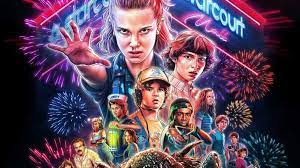

Strangers Things
Stranger Things é uma série criada por The Duffer Brothers, lançada em 2016, onde um grupo de amigos acaba se envolvendo em uma longa jornada após conhecer Onze.
Sinopse
Um grupo de amigos se envolve em uma série de eventos sobrenaturais na pacata cidade de Hawkins. Eles enfrentam criaturas monstruosas, agências secretas do governo e se aventuram em dimensões paralelas.
Você pode assistir em: netflix

